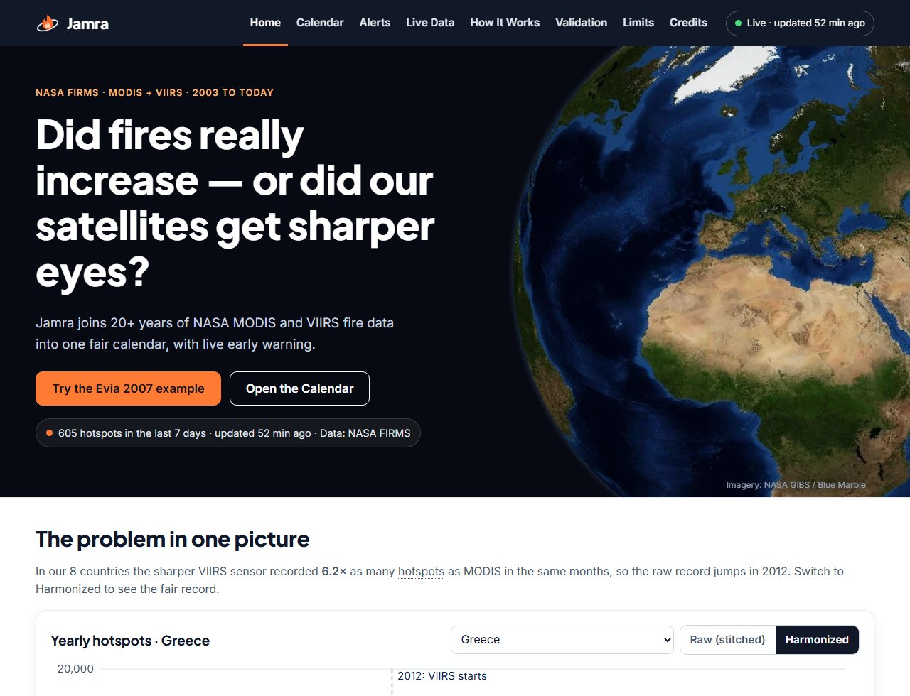
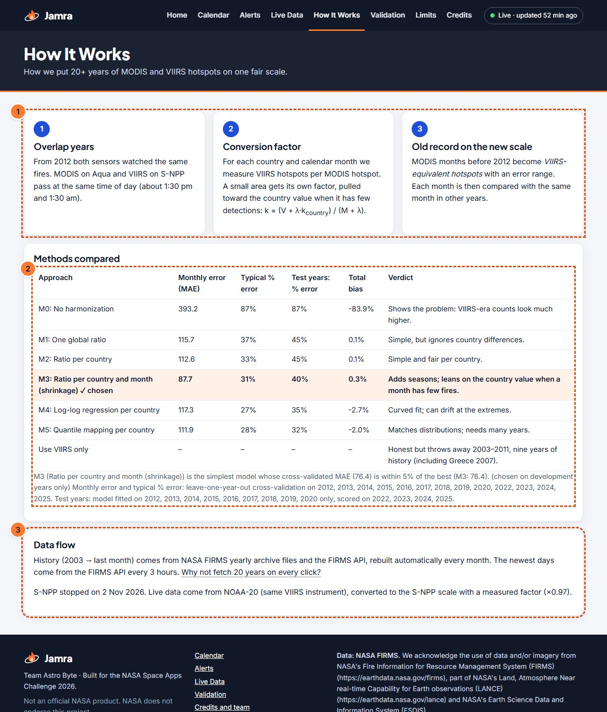
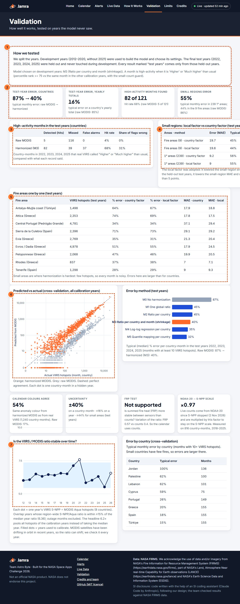
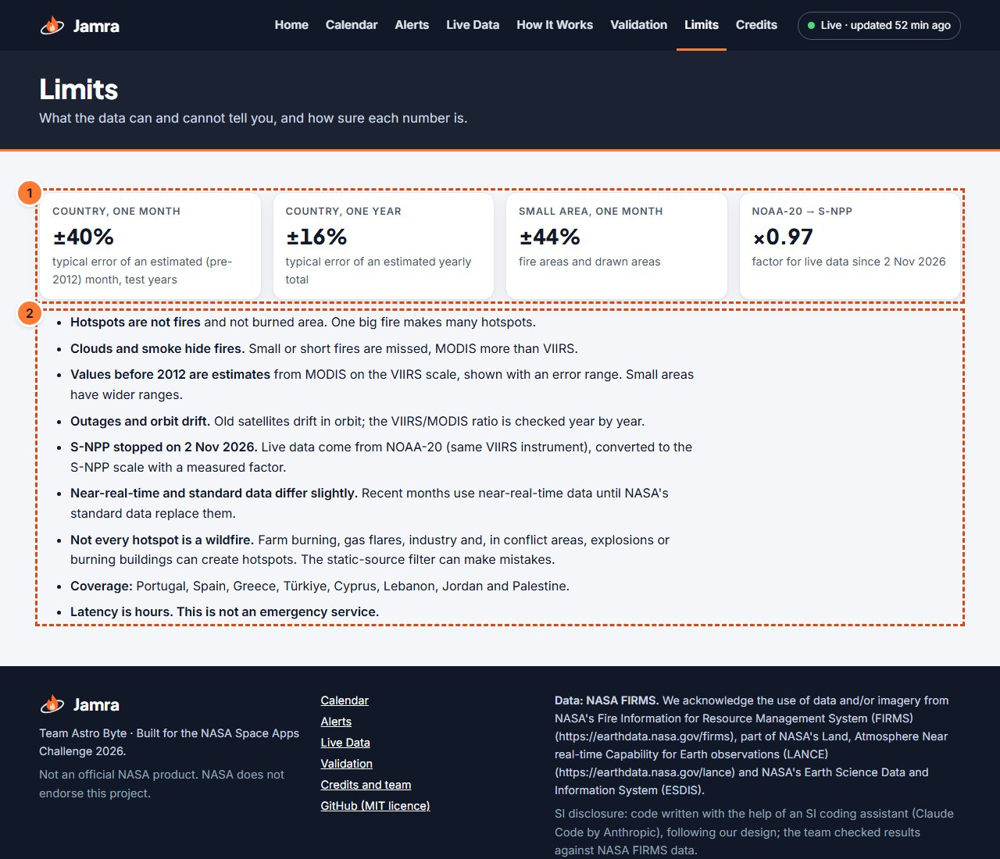
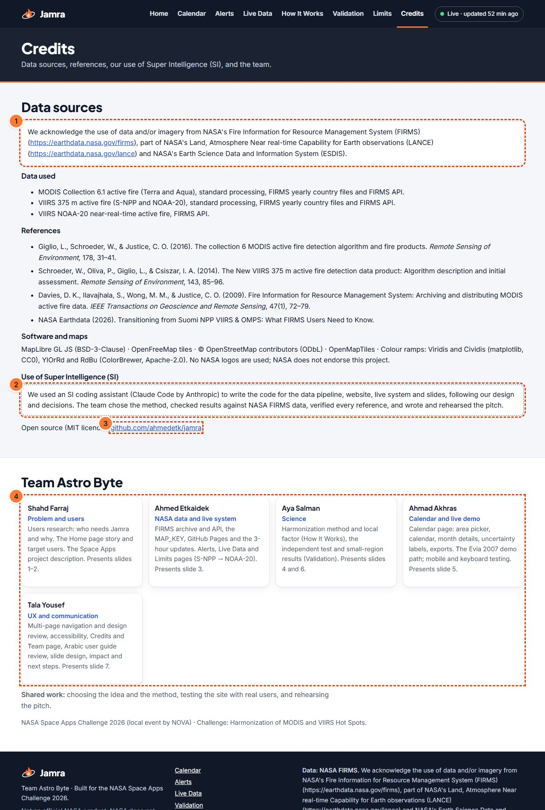

تقويم موحَّد لنشاط الحرائق من قمرَي MODIS وVIIRS مع إنذار مبكر مباشر
دليل استخدام الموقع
فريق Astro Byte · NASA Space Apps Challenge 2026
شهد فرّاج · أحمد اتكيدك · آية سلمان · أحمد الأخرس · تالا يوسف
صورة الأرض: NASA GIBS / Blue Marble · مبني لتحدّي NASA Space Apps Challenge 2026 · ليس منتجًا رسميًا لناسا
الموقع: https://ahmedetk.github.io/jamra/ · البيانات حتى 2026-10-31 · جميع الأرقام في هذا الدليل محسوبة من بياناتنا
1. ما هي جمرة؟
المشكلة: «قفزة وهمية» في عدد الحرائق
ترصد الأقمار الصناعية الحرائق على شكل «بؤر حرارية» (hotspots)، أي بكسلات ساخنة في صور القمر. منذ عام 2000 يرصدها جهاز MODIS بدقة 1 كم. وفي 2012 انضم جهاز أدقّ هو VIIRS بدقة 375 م، فصار يرى حرائق أصغر وبؤرًا أكثر للحريق نفسه.
في دولنا الثماني سجّل VIIRS نحو 6.2 أضعاف البؤر التي سجّلها MODIS في الأشهر نفسها. لذلك إذا وصلنا السجلَّين كما هما، يظهر ارتفاع كبير بعد 2012 لم يحدث فعلًا على الأرض: سببه دقة الجهاز الجديد، لا زيادة الحرائق.
الحل
جمرة «تُوائم» السجل القديم: تحوّل أعداد MODIS قبل 2012 إلى ما يعادلها بمقياس VIIRS، فيصبح لدينا سجل واحد عادل من 2003 حتى اليوم. ثم تقارن كل شهر بالمعتاد له في السنوات الأخرى، وتتابع بيانات ناسا الجديدة كل 3 ساعات لتنبّه إذا كان الشهر الحالي غير عادي.

الصفحة الرئيسية: الرسم البياني بوضع «المُواءَم» (Harmonized). الأعمدة المخطَّطة قبل 2012 مقدَّرة من MODIS.
جمرة ليست خدمة طوارئ: بيانات الأقمار تصل بتأخير ساعات. في الطوارئ اتصل برقم الطوارئ المحلي.
2. لمن صُمِّمت جمرة؟
المستخدمون الأساسيون
المستخدم
ماذا يستفيد
مديرو الطوارئ وفرق الإنذار المبكر
يعرفون فورًا إن كان هذا الشهر أعلى من المعتاد في منطقتهم (صفحة التنبيهات وبطاقة «الإنذار المبكر الآن»).
فرق الإطفاء
يرون أحدث البؤر على الخريطة وفي جدول من واجهة ناسا FIRMS مباشرة.
مديرو الأراضي والغابات
يعرفون متى يبدأ موسم الحرائق ومتى يبلغ ذروته، وأي السنوات كانت الأسوأ، على مقياس واحد عادل.
العلماء والباحثون
سجل متّسق من 2003 حتى اليوم مع نطاق الخطأ، وتنزيل البيانات بصيغة CSV، وطريقة مفتوحة ونتائج اختبار مستقل.
المستفيدون غير المباشرين
المجالس القروية والبلديات والمزارعون يستفيدون عبر السلطات المحلية والدفاع المدني الذين يستخدمون جمرة: إنذار أبكر، وتخطيط أفضل لموسم الحرائق.
3. خريطة الموقع
الموقع ثماني صفحات، لكل صفحة رابط مستقل. شريط التنقل نفسه في أعلى كل صفحة، والصفحة الحالية مميَّزة. الضغط على شعار جمرة يعيدك إلى الرئيسية. المنطقة والفترة والشهر المختارة تنتقل معك بين الصفحات عبر الرابط.
الرئيسية /jamra/
التقويم /calendar/
التنبيهات /alerts/
البيانات المباشرة /live/
كيف تعمل /how-it-works/
التحقق /validation/
الحدود /limits/
المصادر والفريق /credits/
الروابط القديمة من الموقع ذي الصفحة الواحدة (مثل #calendar) تُحوَّل تلقائيًا إلى الصفحة الجديدة مع إبقاء خياراتك. ويمكن تثبيت الموقع على الهاتف كتطبيق (PWA) ويعمل دون إنترنت من آخر نسخة محفوظة.
4. صفحة بصفحة
4.1 الرئيسية (Home)
الهدف: فهم المشكلة في ثوانٍ ورؤية الحل. لمن: كل زائر جديد ولجان التحكيم.
الصفحة الرئيسية مع أرقام الأزرار.
#
الاسم
ماذا يفعل
لماذا هو موجود
1
شريط التنقل
ينقلك بين الصفحات الثماني.
لكل جزء من العمل صفحة واضحة برابط خاص.
2
شارة الحالة
تُظهر «مباشر · حُدِّث قبل …» أو «متأخر» أو «قديم».
حتى تعرف فورًا مدى حداثة بيانات ناسا.
3
اختيار المنطقة
يغيّر المنطقة المعروضة في الرسم.
لترى القفزة الوهمية في دولتك أو منطقتك.
4
زر «خام» (Raw)
يعرض السجل كما هو: MODIS حتى 2011 ثم VIIRS.
ليُظهر القفزة الوهمية بعد 2012.
5
زر «مُواءَم» (Harmonized)
يعرض السجل بعد التحويل إلى مقياس VIIRS.
ليُظهر أن القفزة تختفي بعد المواءمة.
6
الرسم السنوي
عدد البؤر لكل سنة؛ مرّر المؤشر لترى الرقم.
صورة سريعة لأعوام الحرائق الكبرى.
7
«جرّب مثال إيفيا 2007»
يفتح التقويم على إيفيا وشهر آب 2007 مع التفاصيل.
مثال جاهز يوضح قيمة مقدَّرة من MODIS مع نطاق خطئها.
4.2 التقويم (Calendar)
الهدف: تاريخ الحرائق لأي منطقة: أي الأشهر والسنوات أكثر نشاطًا، ومقارنة كل شهر بالمعتاد. لمن: الجميع، وخاصة مديري الأراضي والعلماء.
أعلى صفحة التقويم: اختيار المنطقة والخريطة.
#
الاسم
ماذا يفعل
لماذا هو موجود
1
مناطق الحرائق
مناطق جاهزة مشهورة بالحرائق (إيفيا، أتيكا، وسط البرتغال…).
للبدء بسرعة دون رسم.
2
الدول
الدول الثماني في منطقة التغطية.
للمقارنة على مستوى الدولة.
3
الرسم (Draw)
ارسم مضلّعًا أو دائرة على الخريطة.
لدراسة أي منطقة تهمّك بالضبط.
4
خط العرض/الطول
أدخل نقطة ونصف قطر، أو حدود مربع.
عندما تعرف الإحداثيات من خريطة أخرى.
5
الخريطة
تُظهر المنطقة المختارة وأحدث البؤر.
لترى المكان والسياق.
6
البؤر الأخيرة
عرض بؤر آخر 24 ساعة أو 7 أيام أو إخفاؤها.
لمتابعة النشاط الحالي على الخريطة.
7
بطاقة المنطقة
تُظهر معامل التحويل للمنطقة ونطاق الخطأ ومصدره.
الشفافية: كيف قُدِّرت قيم ما قبل 2012 هنا.
وسط صفحة التقويم: الفترة، البطاقات، التقويم وأزرار التنزيل.
#
الاسم
ماذا يفعل
لماذا هو موجود
1
الفترة (من/إلى)
تحدد السنوات التي يُحسب منها «المعتاد».
لتقارن مع فترة تختارها.
2
إخفاء الشعلات والصناعة
يحذف خلايا فيها حرارة ثابتة طوال السنة تقريبًا.
حتى لا تُحسب شعلات الغاز والمصانع كحرائق؛ يمكن إيقافه.
3
البطاقات
شهر الذروة، الآن مقابل المعتاد، أنشط سنة، الإنذار المبكر الآن، إجمالي الرصد.
أهم الأرقام بنظرة واحدة.
4
«مقارنةً بالمعتاد»
يلوّن الخلايا: أزرق أقل من المعتاد، أحمر أعلى، مع رموز ▲ و▼ ونص.
لرؤية الأشهر غير العادية؛ لا نعتمد على اللون وحده.
5
أسابيع
يعرض 52 أسبوعًا بدل 12 شهرًا (للدول ومناطق الحرائق).
لتفاصيل أدق لبداية الموسم.
6
الألوان
يغيّر لوحة الألوان (Viridis، Cividis، YlOrRd).
لوحات مناسبة لعمى الألوان.
7
التقويم
صفوف = سنوات، أعمدة = أشهر. الخلايا المخطَّطة مقدَّرة من MODIS، والمصمتة مرصودة من VIIRS.
قلب الموقع: تاريخ المنطقة كاملًا.
8
تنزيل CSV
جدول القيم الشهرية مع المصدر ونطاق الخطأ.
للباحثين وللتحليل في Excel.
9
تنزيل PNG
صورة للتقويم.
للعروض والتقارير.
10
ملخص PNG
صفحة ملخص واحدة كصورة.
لمشاركتها بسرعة.
11
ملخص PDF
صفحة ملخص A4: المنطقة، الفترة، مقارنة الشهر بالوسيط، تقويم صغير، المصدر، الاعتراف ببيانات FIRMS.
لغرف العمليات والتقارير الرسمية.
الأرقام 8 إلى 18 في الصورة أعلاه بالترتيب نفسه.
تفاصيل الشهر (رقم 19): إيفيا، آب 2007.
تفاصيل الشهر (19): اضغط أي خلية لترى جملة واضحة، والقيمة ومصدرها، ونطاق الخطأ، والقيمة الخام، والمعتاد (الوسيط) ونطاق «النصف الأوسط»، والرتبة المئوية، ورسمًا لنفس الشهر في كل السنوات مع خط الوسيط. يمكن التنقل بين الخلايا بأسهم لوحة المفاتيح والضغط على Enter.
مثال حقيقي من بياناتنا: آب 2007 في إيفيا ≈ 1,086 بؤرة (من 605 إلى 1,567)، أي نحو 17.2 ضعف آب المعتاد (63). القيمة مقدَّرة من MODIS بمقياس VIIRS بنطاق خطأ ±44%.
نفس التفاصيل على شاشة هاتف بعرض 390 بكسل.
4.3 التنبيهات (Alerts)
الهدف: هل هذا الشهر غير عادي الآن؟ لمن: مديرو الطوارئ وفرق الإنذار المبكر.
صفحة التنبيهات.
#
الاسم
ماذا يفعل
لماذا هو موجود
1
حالة البيانات
آخر تحديث ناجح ومصدره؛ وتظهر رسائل «متأخر» أو «بيانات جزئية» أو «فشل آخر تحديث» عند الحاجة.
حتى لا تثق بمستوى «عادي» على بيانات قديمة أو ناقصة.
2
ملاحظة المقياس
توضّح أن الأعداد من NOAA-20 مضروبة في {kjn:.2f} لتطابق مقياس S-NPP.
لأن S-NPP توقف في 2 تشرين الثاني 2026.
3
بطاقات التنبيه
لكل منطقة: الفترة (مثلًا 1–13 تشرين الثاني، منذ بداية الشهر)، القيمة مقابل المعتاد والنسبة والمستوى، وقت التحديث، والمصدر.
قرار سريع: عادي، مرتفع، عالٍ، أو شديد.
4
الخلاصات العامة
روابط alerts.json و RSS و status.json.
لربط أنظمة أخرى بتنبيهات جمرة.
المستويات: عادي (Normal)، مرتفع (≥ المئين 75)، عالٍ (≥ 90)، شديد (≥ 97.5)، مقارنةً بنفس الأيام في السنوات السابقة. إذا كانت البيانات أقدم من 30 ساعة يظهر «قديم» بدل أي مستوى.
4.4 البيانات المباشرة (Live Data)
الهدف: أحدث البؤر لمنطقة مختارة. لمن: فرق الإطفاء والطوارئ.
صفحة البيانات المباشرة.
#
الاسم
ماذا يفعل
لماذا هو موجود
1
اختيار المنطقة
نفس طرق الاختيار في التقويم.
لتحديد مكان البحث.
2
الخريطة
تُظهر البؤر الجديدة.
لرؤية مواقع البؤر.
3
الفترة
آخر 24 ساعة حتى 7 أيام.
ضمن حدود واجهة ناسا.
4
«اجلب من NASA FIRMS»
يجلب الكشوفات من NOAA-20 ويعرض وقت الجلب بالتوقيت العالمي.
صفحة علمية تشرح الطريقة: سنوات التداخل، معامل التحويل، ووضع السجل القديم على المقياس الجديد، مع جدول يقارن ست طرق.

صفحة «كيف تعمل».
#
الاسم
ماذا يفعل
لماذا هو موجود
1
الخطوات الثلاث
سنوات التداخل ← معامل التحويل ← السجل القديم بالمقياس الجديد.
شرح الطريقة للعلماء.
2
مقارنة الطرق
أخطاء الطرق M0 إلى M5 والطريقة المختارة.
لماذا اخترنا هذه الطريقة.
3
مسار البيانات
من أين تأتي البيانات ومتى تتحدث.
الشفافية حول التحديث التلقائي.
4.6 التحقق (Validation)
نتائج الاختبار المستقل على سنوات لم تُستخدم أبدًا في بناء النموذج (التفاصيل في القسم 7).
#
الاسم
ماذا يفعل
لماذا هو موجود
1
كيف اختبرنا
تقسيم السنوات إلى سنوات تطوير وسنوات اختبار.
اختبار عادل ومستقل.
2
أرقام الاختبار
الخطأ للدول وللمجاميع السنوية والمناطق الصغيرة.
ملخص الدقة.
3
الأشهر عالية النشاط
كم شهرًا اكتشفنا وكم فاتنا وكم إنذارًا خاطئًا.
مهم للإنذار المبكر.
4
المناطق الصغيرة
المعامل المحلي مقابل معامل الدولة.
قاعدة القرار بشفافية.
5
مناطق الحرائق
الخطأ لكل منطقة على حدة.
أين يصعب التقدير.
6
المتوقَّع مقابل الفعلي
كل نقطة شهر لدولة في سنة مخفية.
رؤية الدقة بصريًا.
7
ثبات النسبة
نسبة VIIRS إلى MODIS لكل سنة.
لكشف انجراف مدارات الأقمار القديمة.

صفحة التحقق.
4.7 الحدود (Limits)

صفحة الحدود.
#
الاسم
ماذا يفعل
لماذا هو موجود
1
أرقام عدم اليقين
نطاق الخطأ لشهر الدولة وسنتها وللمناطق الصغيرة، ومعامل NOAA-20.
حتى يعرف المستخدم مدى الثقة بكل رقم.
2
قائمة الحدود
البؤر ليست حرائق، الغيوم تخفي الحرائق، انجراف المدارات، تغيّر الأقمار، وليست خدمة طوارئ.
الصدق حول ما لا تستطيع البيانات قوله.
4.8 المصادر والفريق (Credits)

صفحة المصادر والفريق.
#
الاسم
ماذا يفعل
لماذا هو موجود
1
الاعتراف ببيانات FIRMS
النص الذي تطلبه ناسا حرفيًا.
شرط استخدام البيانات.
2
الإفصاح عن الذكاء الفائق (SI)
كيف استخدمنا مساعد البرمجة.
شرط مسابقة Space Apps.
3
رابط GitHub
الكود مفتوح المصدر (MIT).
لمن يريد التحقق أو إعادة الاستخدام.
4
الفريق
الأعضاء الخمسة وتوزيع العمل.
من فعل ماذا.
5. سيناريوهات استخدام حقيقية
مدير طوارئ: هل هذا الشهر غير عادي؟
افتح صفحة التنبيهات.
تأكد من شارة الحالة «مباشر» وعدم وجود «بيانات جزئية».
اقرأ بطاقة منطقتك: الفترة، القيمة مقابل المعتاد، والمستوى.
اضغط البطاقة لفتح التقويم على المنطقة نفسها ومقارنة الأشهر السابقة.
مدير غابات: مقارنة مواسم الحرائق
افتح التقويم واختر منطقة أو ارسمها.
اختر «مقارنةً بالمعتاد» لرؤية الأشهر الأعلى (▲) والأدنى (▼).
اقرأ قسم «هل يبدأ الموسم أبكر؟» أسفل التقويم: يذكر الاتجاه وهل هو ذو دلالة إحصائية.
نزّل «ملخص PDF» لإرفاقه بتقرير.
فريق إطفاء: البيانات المباشرة
افتح البيانات المباشرة واختر المنطقة.
اختر الفترة (مثلًا آخر 24 ساعة) واضغط «اجلب من NASA FIRMS».
رتّب الجدول حسب الوقت أو قوة الإشعاع FRP، وانظر المواقع على الخريطة.
نزّل CSV عند الحاجة.
باحث: تنزيل البيانات
في التقويم اختر المنطقة والفترة.
اضغط «تنزيل CSV»: كل شهر مع قيمته المُواءَمة ومصدره (مرصود/مقدَّر) ونطاق الخطأ والأعداد الخام لكل قمر.
راجع صفحتَي «كيف تعمل» و«التحقق» لفهم الطريقة ودقتها.
مثال إيفيا 2007
في الرئيسية اعرض الرسم «خام» ثم «مُواءَم».
اضغط «جرّب مثال إيفيا 2007».
يفتح التقويم على آب 2007 مع التفاصيل: ≈ 1,086 بؤرة، مقدَّرة من MODIS بمقياس VIIRS (±44%).
قارنها بآب في السنوات الأخرى في الرسم، ثم افتح صفحة التحقق لنتيجة الاختبار المستقل.
6. كيف تعمل البيانات (بشكل مبسّط)
قيم مرصودة وقيم مقدَّرة
من 2012 فصاعدًا القيم مرصودة مباشرة من VIIRS (خلايا مصمتة). قبل 2012 القيم مقدَّرة من MODIS بمقياس VIIRS (خلايا مخطَّطة وعلامة ≈) ومعها نطاق خطأ: نحو ±40% لشهر الدولة، و±16% لمجموع سنة الدولة، و±44% لشهر في منطقة صغيرة. هذه الأرقام هي الخطأ المعتاد في سنوات الاختبار المستقل.
التقويم بوضع «مقارنةً بالمعتاد»: نص ورموز بجانب كل لون.
التحديث كل 3 ساعات
كل 3 ساعات يجلب الموقع تلقائيًا أحدث كشوفات NOAA-20 من واجهة ناسا FIRMS ويحسب مستوى الإنذار لكل منطقة. وكل شهر يُعاد بناء الأرشيف التاريخي من ملفات ناسا. إذا فشل التحديث تبقى آخر بيانات سليمة وتظهر حالة واضحة.
تحوّل S-NPP إلى NOAA-20
أوقفت ناسا بيانات قمر S-NPP في 2 تشرين الثاني 2026. قمر NOAA-20 يحمل جهاز VIIRS نفسه وفي المدار نفسه تقريبًا. قِسنا العلاقة بينهما في بيانات 2018–2025 فوجدنا معاملًا قدره 0.97، ونضرب به أعداد NOAA-20 لتبقى على مقياس سجلّنا.
7. نتائج التحقق والحدود
تصميم الاختبار: سنوات التطوير (2012–2020 دون 2021) لبناء النموذج واختيار إعداداته، وسنوات الاختبار (2022، 2023، 2024، 2025) محجوزة ولم تُلمس أثناء التطوير. النموذج المختار: M3 (نسبة لكل دولة وشهر مع «انكماش» نحو قيمة الدولة).
87% ← 40%الخطأ المعتاد لشهر الدولة في سنوات الاختبار: MODIS الخام ← بعد المواءمة
16%الخطأ المعتاد لمجموع سنة الدولة (الخام: 85%)
82 من 121الأشهر عالية النشاط التي اكتُشفت (نسبة الاكتشاف 68%)، مع 37 إنذارًا خاطئًا؛ MODIS الخام اكتشف 5 فقط
55%الخطأ المعتاد لشهر في 239 منطقة بحجم 1°، و44% في مناطق الحرائق التسع
المعامل المحلي للمناطق الصغيرة
المناطق
معامل الدولة: الخطأ (MAE)
المعامل المحلي: الخطأ (MAE)
الاكتشاف (دولة / محلي)
مناطق الحرائق (9)
19.7
19.6
62 / 62
مناطق 1° (239)
9.23
8.97
1274 / 1286
القرار: اعتُمد المعامل المحلي لأنه خفّض خطأ المناطق الصغيرة في سنوات الاختبار؛ والتحسّن صغير لكنه ثابت.
اختبار FRP
اختبرنا فكرة أن مجموع قوة الإشعاع (FRP) أكثر ثباتًا بين القمرين من عدد البؤر: لم تؤيدها بياناتنا (تذبذب النسبة 0.57 مقابل 0.40 للأعداد)، لذلك يعتمد التقويم على عدد البؤر.
الحدود
البؤرة ليست حريقًا وليست مساحة محروقة.
الغيوم والدخان تخفي الحرائق، والحرائق الصغيرة تفوت MODIS أكثر.
العلم: طريقة المواءمة والمعامل المحلي (كيف تعمل)، والاختبار المستقل ونتائج المناطق الصغيرة (التحقق).
الشريحتان 4 و6
أحمد الأخرس
صفحة التقويم: اختيار المنطقة، التقويم، تفاصيل الشهر، علامات عدم اليقين، التنزيلات. مسار عرض إيفيا 2007، العرض المباشر، واختبار الهاتف ولوحة المفاتيح.
الشريحة 5
تالا يوسف
تجربة المستخدم والتواصل: التنقل بين الصفحات ومراجعة التصميم، إمكانية الوصول، صفحة المصادر والفريق، مراجعة الدليل العربي، تصميم الشرائح، الأثر والخطوات القادمة، وختام العرض.
الشريحة 7
عمل مشترك: اختيار الفكرة والطريقة، اختبار الموقع مع مستخدمين حقيقيين، والتدرّب على العرض.
9. مسرد المصطلحات
بالعربية
بالإنجليزية
المعنى
بؤرة حرارية
Hotspot
بكسل ساخن في صورة القمر الصناعي، غالبًا حريق.
مواءمة
Harmonization
تحويل أعداد MODIS إلى ما يعادلها بمقياس VIIRS.
شذوذ / مقارنة بالمعتاد
Anomaly
كم يختلف الشهر عن الوسيط لنفس الشهر في السنوات الأخرى.
الوسيط
Median
القيمة الوسطى: نصف السنوات أعلى منها ونصفها أدنى.
الرتبة المئوية
Percentile rank
«أعلى من 90% من السنوات» تعني أن سنة واحدة من كل عشر كانت أعلى.
قوة الإشعاع الحراري
FRP
الحرارة التي يطلقها الحريق بالميغاواط.
نطاق الخطأ
Uncertainty
المدى المتوقع للقيمة الحقيقية حول التقدير.
سنوات الاختبار
Test years
سنوات محجوزة لم تُستخدم في بناء النموذج، لقياس دقته بعدل.
إنذار خاطئ
False alarm
قال النموذج «أعلى من المعتاد» ولم يكن كذلك.
شبه آني
Near real time (NRT)
بيانات تصل خلال ساعات من مرور القمر.
10. المصادر والمراجع والإفصاح
We acknowledge the use of data and/or imagery from NASA's Fire Information for Resource Management System (FIRMS) (https://earthdata.nasa.gov/firms), part of NASA's Land, Atmosphere Near real-time Capability for Earth observations (LANCE) (https://earthdata.nasa.gov/lance) and NASA's Earth Science Data and Information System (ESDIS).
المراجع
Giglio, L., Schroeder, W., & Justice, C. O. (2016). The collection 6 MODIS active fire detection algorithm and fire products. Remote Sensing of Environment, 178, 31–41.
Schroeder, W., Oliva, P., Giglio, L., & Csiszar, I. A. (2014). The New VIIRS 375 m active fire detection data product. Remote Sensing of Environment, 143, 85–96.
Davies, D. K., Ilavajhala, S., Wong, M. M., & Justice, C. O. (2009). Fire Information for Resource Management System. IEEE TGRS, 47(1), 72–79.
NASA Earthdata (2026). Transitioning from Suomi NPP VIIRS & OMPS: What FIRMS Users Need to Know.
استخدمنا مساعد برمجة بالذكاء الفائق (Claude Code من Anthropic) لكتابة كود معالجة البيانات والموقع والنظام المباشر والشرائح وهذا الدليل، وفق تصميمنا وقراراتنا. الفريق اختار الطريقة، وتحقق من النتائج مقابل بيانات ناسا FIRMS، وتأكد من كل مرجع، وكتب العرض وتدرّب عليه.
الكود مفتوح المصدر (MIT): https://github.com/ahmedetk/jamra